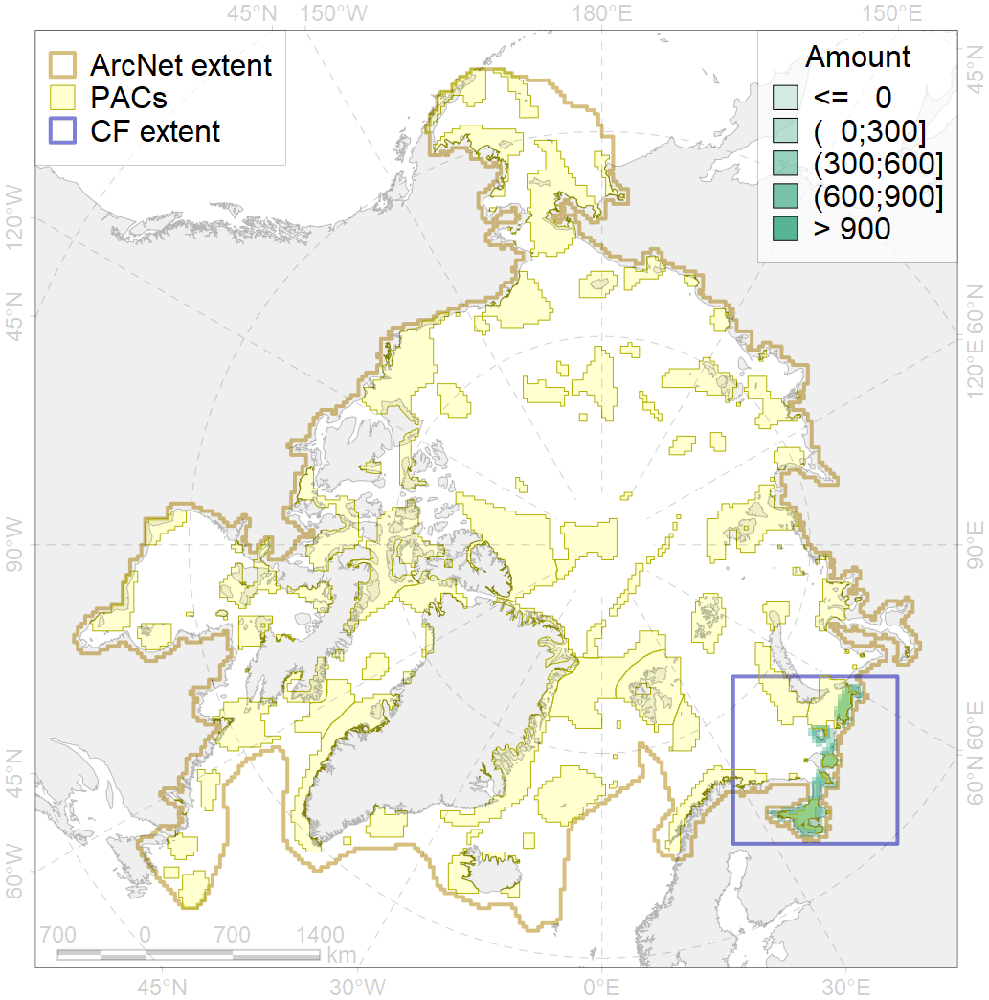
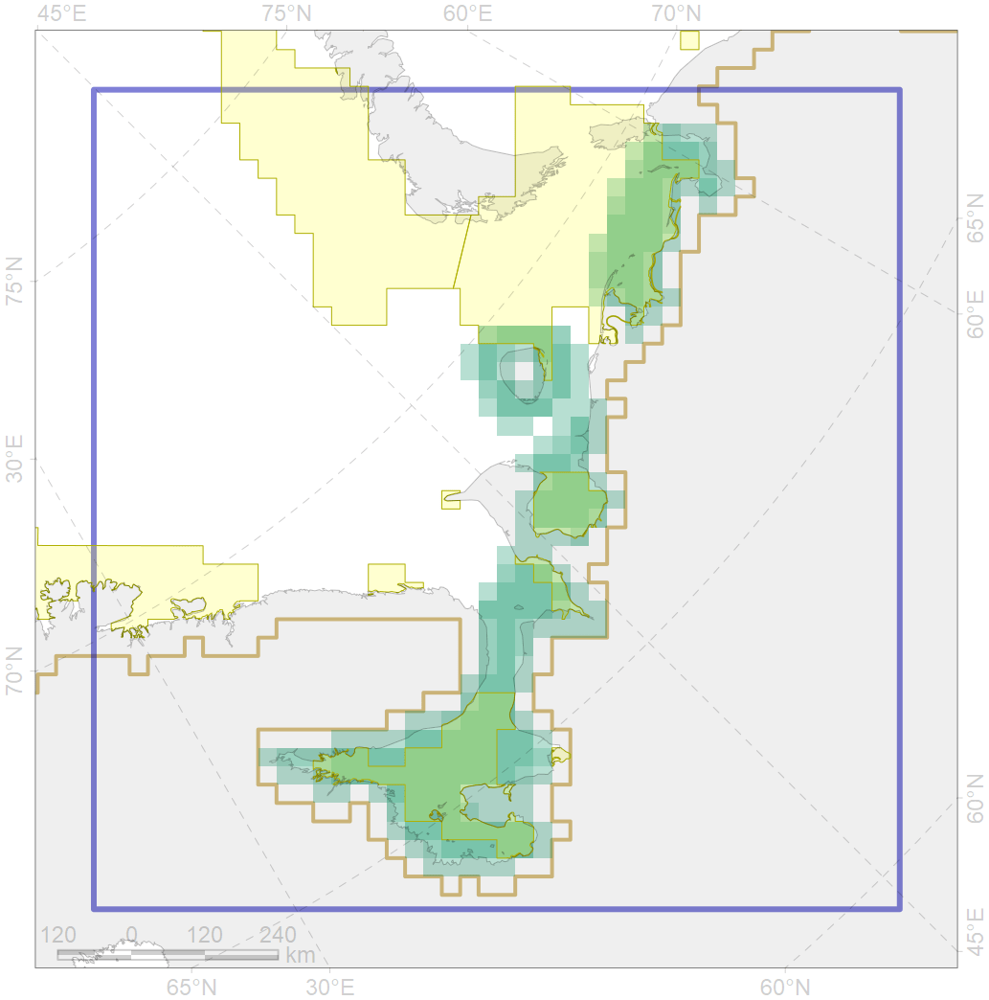

4020

| CF ID | 4020 |
| CF Name | Feeding area of the White-sea vendace (Coregonus sardinella marisalbi) |
| Time Period | 1930-2000s |
| Source(s) | Andriashev, 1954; Reshetnikov, 2010 |
| Seasonality | January-December |
| Depth Horizon | 0-60 |
| Methodology | Compiled from literature sources based on field observations |
| Author Name | N. Chernova |
| Notes | White-sea vendace (Coregonus sardinella marisalbi, С albula? ) - Taxonomical status needs in research |
| Conservation Target Set in the Scenario | 0.24 |
| Conservation Target Achieved in the Scenario | 0.551 (Scenario: 229.8%) |
| PAC ID | Proportion in the PAC | Contribution to ArcNet Target Achievement | PAC’s Contribution to the Achieved Target |
|---|---|---|---|
| 20 | 20.9% | 81.1% | 35.3% |
| 23 | 7.8% | 28.5% | 12.4% |
| 24 | 2.4% | 9.3% | 4.1% |
| 26 | 27.7% | 95.0% | 41.3% |
| inner | 58.8% | 213.9% | 93.1% |
| outer | 41.2% | 15.9% | 6.9% |